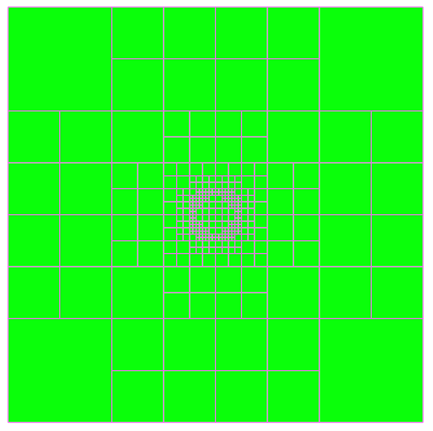

Cut of a not refined Octree.

Cut of a refined Octree according to a sphere.
This tutorial demonstrates how to refine an octree mesh inside a surface until the finest level is set to the inside elements.
|
 Cut of a not refined Octree. |
Cut of a refined Octree according to a sphere. |
By default, an octree is refined in the vicinity of an input surface.
To refine an octree everywhere in the surface inside, we use
the functions X.blankCells and G.adaptOctree.
X.blankCells is used to determine which points are inside the provided surface. The cellN value equal to 0 corresponds to a point inside the surface.
A refinement indicator is computed according to the cellN value and
according to the volume of cells of the initial finest level. Points of finest levels marked with a cellN=0 are not refined.
[Download python script].